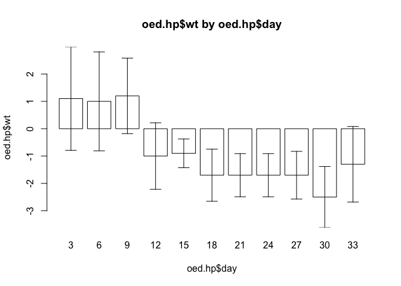

10 Computer intensive methods
10.1 Estimation
Estimation involves the calculation of a measure with some sense of precision based upon sampling variation.
Only a few estimators (e.g. the sample mean from a normal population) have exact formulae that may be used to estimate sampling variation. Typically, estimates of variability are based upon approximations informed by expected or postulated properties of the sampled population. The development of variance formulae for some measures may require in-depth statistical and mathematical knowledge or may even be impossible to derive.
Bootstrap methods are computer-intensive methods that can provide estimates and measures of precision (e.g. confidence intervals) without resort to theoretical models, higher mathematics, or assumptions about the sampled population. They rely on repeated sampling, sometimes called resampling, of the observed data.
As a simple example of how such methods work, we will start by using bootstrap methods to estimate the mean from a normal population. We will work with a very simple dataset which we will enter directly:
x <- c(7.3, 10.4, 14.0, 12.2, 8.4)We can summarise this data quite easily:
mean(x)## [1] 10.46The sample() function can be used to select a bootstrap replicate:
sample(x, length(x), replace = TRUE)## [1] 12.2 12.2 10.4 10.4 8.4Enter this command several times to see some more bootstrap replicates. Remember that previous commands can be recalled and edited using the up and down arrow keys – they do not need to be typed out in full each time. The length() parameter is not required for taking bootstrap replicates and can be omitted.
It is possible to apply a summary measure to a replicate:
mean(sample(x, replace = TRUE))## [1] 10.24Enter this command several times. A bootstrap estimate of the mean of x can be made by repeating this process many times and taking the median of the means for each replicate.
One way of doing this is to create a matrix where each column contains a bootstrap replicate and then use the apply() and mean() functions to get at the estimate.
First create the matrix of replicates. Here we take ten replicates:
x1 <- matrix(sample(x, length(x) * 10, replace = TRUE),
nrow = length(x), ncol = 10)
x1## [,1] [,2] [,3] [,4] [,5] [,6] [,7] [,8] [,9] [,10]
## [1,] 7.3 14.0 7.3 7.3 10.4 10.4 8.4 7.3 14.0 14
## [2,] 10.4 8.4 10.4 10.4 7.3 8.4 14.0 8.4 7.3 14
## [3,] 10.4 8.4 8.4 12.2 12.2 10.4 7.3 12.2 12.2 14
## [4,] 12.2 8.4 10.4 14.0 10.4 10.4 7.3 14.0 8.4 14
## [5,] 12.2 10.4 12.2 12.2 7.3 14.0 7.3 14.0 12.2 14Then calculate and store the means of each replicate. We can do this using the apply() function to apply the mean() function to the columns of matrix x1:
x2 <- apply(x1, 2, mean)
x2## [1] 10.50 9.92 9.74 11.22 9.52 10.72 8.86 11.18 10.82 14.00The bootstrap estimate of the mean is:
median(x2)## [1] 10.61The bootstrap estimate may differ somewhat from the mean of x:
mean(x)## [1] 10.46The situation is improved by increasing the number of replicates. Here we take 5000 replicates:
x1 <- matrix(sample(x, length(x) * 5000, replace = TRUE),
nrow = length(x), ncol = 5000)
x2 <- apply(x1, 2, mean)
median(x2)## [1] 10.46This is a pretty useless example as estimating the mean / standard deviation, or standard error of the mean of a sample from a normal population can be done using standard formulae.
The utility of bootstrap methods is that they can be applied to summary measures that are not as well understood as the arithmetic mean. The bootstrap method also has the advantage of retaining simplicity even with complicated measures.
To illustrate this, we will work through an example of using the bootstrap to estimate the harmonic mean.
Again, we will work with a simple dataset which we will enter directly:
d <- c(43.64, 50.67, 33.56, 27.75, 43.35, 29.56, 38.83, 35.95, 20.01)The data represents distance (in kilometres) from a point source of environmental pollution for nine female patients with oral / pharyngeal cancer.
The harmonic mean is considered to be a sensitive measure of spatial clustering. The first step is to construct a function to calculate the harmonic mean:
h.mean <- function(x) {length(x) / sum(1 / x)}Calling this function with the sample data:
h.mean(d)## [1] 33.46646Should return an estimated harmonic mean distance of 33.47 kilometres. This is simple. The problem is that calculating the variance of this estimate is complicated using standard methods. This problem is relatively simple to solve using bootstrap methods:
replicates <- 5000
n <- length(d)
x1 <- matrix(sample(d, n * replicates, replace = TRUE),
nrow = n, ncol = replicates)
x2 <- apply(x1, 2, h.mean)
median(x2)## [1] 33.70437A 95% confidence interval can be extracted from x2 using the quantile() function:
quantile(x2, c(0.025, 0.975))## 2.5% 97.5%
## 27.81072 40.11521A 99% confidence interval can also be extracted from x2 using the quantile() function:
quantile(x2, c(0.005, 0.995))## 0.5% 99.5%
## 26.51233 42.21521As a final example of the bootstrap method we will use the method to obtain an estimate of an odds ratio from a two-by-two table. We will work with the salex dataset which we used in exercise 2 and exercise 3:
salex <- read.table("salex.dat", header = TRUE, na.strings = "9")
table(salex$EGGS, salex$ILL)##
## 1 2
## 1 40 6
## 2 10 20We should set up our estimator function to calculate an odds ratio from a two-by-two table:
or <- function(x) {(x[1,1] / x[1,2]) / (x[2,1] / x[2,2])}We should test this:
or(table(salex$EGGS, salex$ILL))## [1] 13.33333The problem is to take a bootstrap replicate from two vectors in a data.frame. This can be achieved by using sample() to create a vector of row indices and then use this sample of indices to select replicates from the data.frame:
boot <- NULL
for(i in 1:1000) {
sampled.rows <- sample(1:nrow(salex), replace = TRUE)
x <- salex[sampled.rows, "EGGS"]
y <- salex[sampled.rows, "ILL"]
boot[i] <- or(table(x, y))
}The vector boot now contains the odds ratios calculated from 1000 replicates. Estimates of the odds ratio and its 95% confidence interval may be obtained using the median() and quantile() functions
median(boot)
quantile(boot, c(0.025, 0.975))## [1] 14.02885## 2.5% 97.5%
## 4.758523 67.562500This approach may fail when some tables have cells that contain zero. Infinite values arise due to division by zero when calculating the odds ratio for some replicates. We can avoid this problem by selecting only those values of boot that are not (!=) infinite (Inf):
boot <- boot[boot != Inf]
median(boot)
quantile(boot, c(0.025, 0.975))## [1] 14## 2.5% 97.5%
## 4.751894 67.468333Another way to avoid this problem is to use an adjusted odds ratio calculated by adding 0.5 to each cell of the two-by-two table:
boot <- NULL
for(i in 1:1000) {
sampled.rows <- sample(1:nrow(salex), replace = TRUE)
x <- salex[sampled.rows, "EGGS"]
y <- salex[sampled.rows, "ILL"]
boot[i] <- or(table(x, y) + 0.5)
}
median(boot)
quantile(boot, c(0.025, 0.975))## [1] 12.4771## 2.5% 97.5%
## 4.632618 49.268471This procedure is preferred when working with sparse tables.
10.2 Hypothesis testing
Computer-intensive methods also offer a general approach to statistical hypothesis testing. To illustrate this we will use computer based simulation to investigate spatial clustering around a point.
Before continuing, we will retrieve a dataset:
waste <- read.table("waste.dat", header = TRUE)The file waste.dat contains the location of twenty-three recent cases of childhood cancer in 5 by 5 km square surrounding an industrial waste disposal site. The columns in the dataset are:
| x | The x location of cases |
| y | The y location of cases |
The x and y variables have been transformed to lie between 0 and 1 with the industrial waste disposal site centrally located (i.e. at x = 0.5, y = 0.5).
Plot the data and the location of the industrial waste disposal site on the same chart:
plot(waste$x, waste$y, xlim = c(0, 1), ylim = c(0, 1))
points(0.5, 0.5, pch = 3)
We can calculate the distance of each point from the industrial waste disposal site using Pythagoras’ Theorem:
distance.obs <- sqrt((waste$x - 0.5) ^ 2 + (waste$y - 0.5) ^ 2)The observed mean distance or each case from the industrial waste disposal site is:
mean(distance.obs)## [1] 0.3444118To test whether this distance is unlikely to have arisen by chance (i.e. evidence of spatial clustering) we need to simulate the distribution of distances when no spatial pattern exists:
r <- 10000
x.sim <- matrix(runif(r * 23), 23, r)
y.sim <- matrix(runif(r * 23), 23, r)
distance.run <- sqrt((x.sim - 0.5)^2 + (y.sim - 0.5)^2)
distance.sim <- apply(distance.run, 2, mean)
hist(distance.sim, breaks = 20)
abline(v = mean(distance.obs), lty = 3)
The probability (i.e. the p-value) of observing a mean distance smaller than the observed mean distance under the null hypothesis can be estimated as the number of estimates of the mean distance under the null hypothesis falling below the observed mean divided by the total number of estimates of the mean distance under the null hypothesis:
m <- mean(distance.obs)
z <- ifelse(distance.sim < m, 1, 0)
sum(z) / r## [1] 0.1009You might like to repeat this exercise using the harmonic mean distance and the median distance.
We can check if this method is capable of detecting a simple cluster using simulated data:
x <- rnorm(23, mean = 0.5, sd = 0.2)
y <- rnorm(23, mean = 0.5, sd = 0.2)
plot(x, y, xlim = c(0, 1), ylim = c(0, 1))
points(0.5, 0.5, pch = 3)
We need to recalculate the distance of each simulated case from the industrial waste disposal site:
distance.obs <- sqrt((x - 0.5) ^ 2 + (y - 0.5) ^ 2)The observed mean distance of each case from the industrial waste disposal site is:
mean(distance.obs)## [1] 0.2257237We can use the the simulated null hypothesis data to test for spatial clustering:
m <- mean(distance.obs)
z <- ifelse(distance.sim < m, 1, 0)
sum(z) / r## [1] 0We should also check if the procedure can detect a plume of cases, such as might be created by a prevailing wind at a waste incineration site, in a similar way:
x <- rnorm(23, 0.25, 0.1) + 0.5
y <- rnorm(23, 0.25, 0.1) + 0.5
plot(x, y, xlim = c(0, 1), ylim = c(0, 1))
points(0.5, 0.5, pch = 3)
distance.obs <- sqrt((x - 0.5)^2 + (y - 0.5)^2)
m <- mean(distance.obs)
z <- ifelse(distance.sim < m, 1, 0)
sum(z) / r## [1] 0.1029The method is not capable of detecting plumes.
You might like to try adapting the simulation code presented here to provide a method capable of detecting plumes of cases.
10.3 Simulating processes
In the previous example we simulated the expected distribution of data under the null hypothesis. Computer based simulations are not limited to simulating data. They can also be used to simulate processes.
In this example we will simulate the behaviour of the lot quality assurance sampling (LQAS) survey method when sampling constraints lead to a loss of sampling independence. In this example the sampling process is simulated and applied to real-world data.
LQAS is a small-sample classification technique that is widely used in manufacturing industry to judge the quality of a batch of manufactured items. In this context, LQAS is used to identify batches that are likely to contain an unacceptably large number of defective items. In the public health context, LQAS may be used to identify communities with unacceptably low levels of service (e.g. vaccine) coverage or worrying levels of disease prevalence.
The LQAS method produces data that is easy to analyse. Data analysis is performed as data is collected and consists solely of counting the number of defects (e.g. children with a specific disease) in the sample and checking whether a predetermined threshold value has been exceeded. This combination of data collection and data analysis is called a sampling plan. LQAS sampling plans are developed by specifying:
A TRIAGE SYSTEM: A classification system that defines high, moderate, and low categories of the prevalence of the phenomenon of interest.
ACCEPTABLE PROBABILITIES OF ERROR: There are two probabilities of error. These are termed provider probability of error (PPE) and consumer probability of error (CPE):
Provider Probability of Error (PPE): The risk that the survey will indicate that prevalence is high when it is, in fact, low. PPE is analogous to type I (\(\alpha\)) error in statistical hypothesis testing.
Consumer Probability of Error (CPE): The risk that the survey will indicate that prevalence is low when it is, in fact, high. CPE is analogous to type II (\(\beta\)) error in statistical hypothesis testing.
Once the upper and lower levels of the triage system and acceptable levels of error have been decided, a set of probability tables are constructed that are used to select a maximum sample size (n) and the number of defects or cases (d) that are allowed in the sample of n subjects before deciding that a population is a high prevalence population. The combination of maximum sample size (n) and number of defects (d) form the stopping rules of the sampling plan. Sampling stops when either the maximum sample size (n) is met or the allowable number of defects (d) is exceeded:
If
dis exceeded then the population is classified as high prevalence.If
nis met without d being exceeded then the population is classified as low prevalence.
The values of n and d used in a sampling plan depend upon the threshold values used in the triage system and the acceptable levels of error. The values of n and d used in a sampling plan are calculated using binomial probabilities. For example, the probabilities of finding 14 or fewer cases (\(d = 14\)) in a sample of 50 individuals (\(n = 50\)) from populations with prevalences of either 20% or 40% are:
pbinom(q = 14, size = 50, prob = 0.2)
pbinom(q = 14, size = 50, prob = 0.4)## [1] 0.9392779## [1] 0.05395503The sampling plan with \(n = 50\) and \(d = 14\) is, therefore, a reasonable candidate for a sampling plan intended to distinguish between populations with prevalences of less than or equal to 20% and populations with prevalences greater than or equal to 40%.